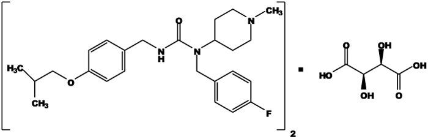
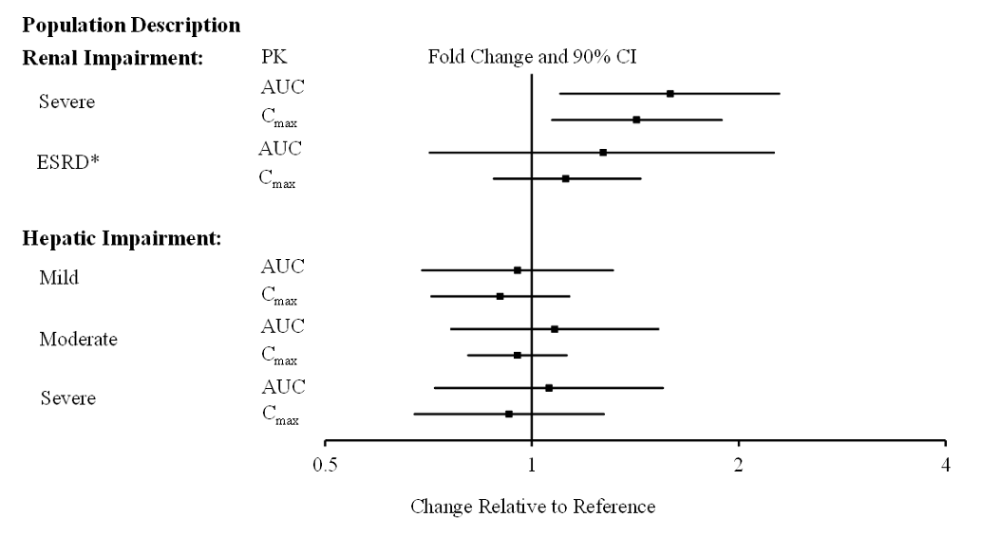
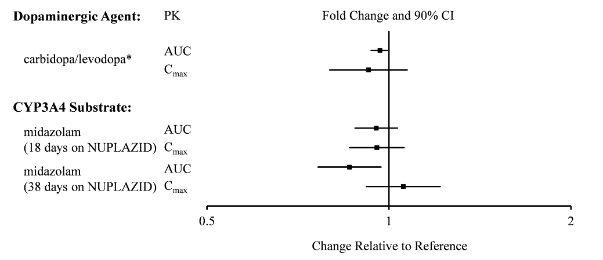
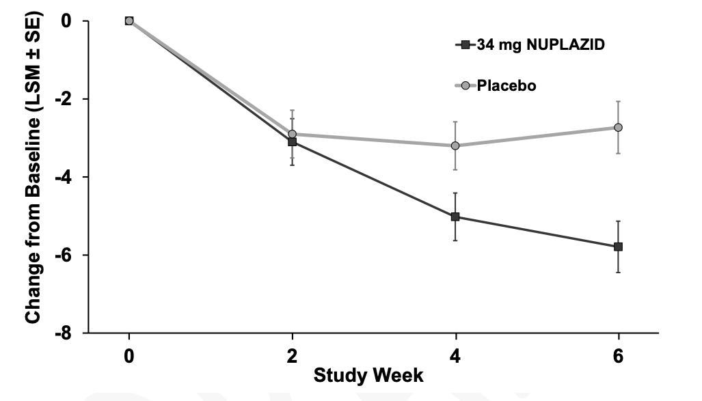
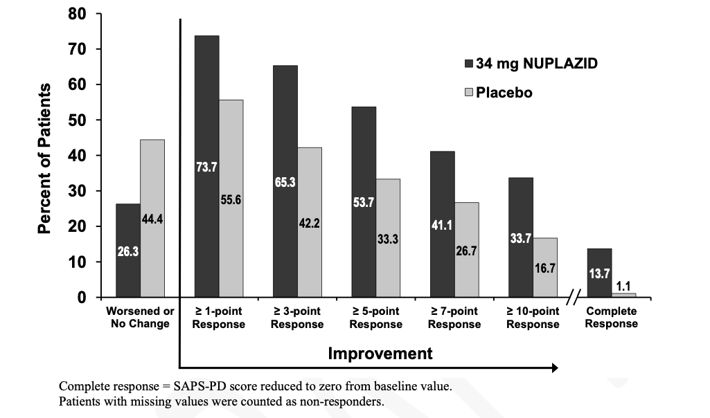
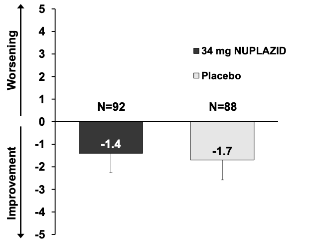
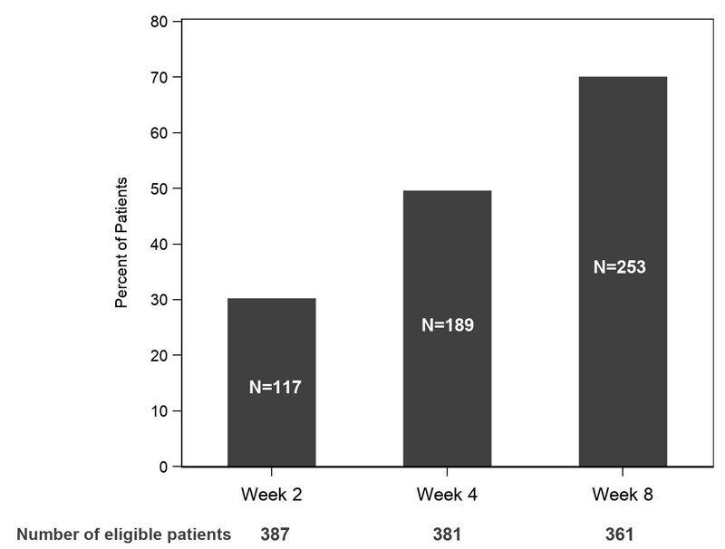
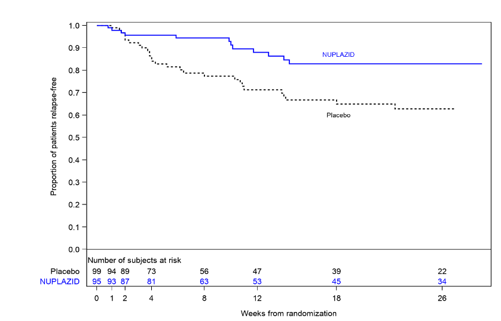

HIGHLIGHTS OF PRESCRIBING INFORMATION
These highlights do not include all the information needed to use NUPLAZID safely and effectively.
See full prescribing information for NUPLAZID.
NUPLAZID® (pimavanserin) capsules, for oral use
NUPLAZID® (pimavanserin) tablets, for oral use
Initial U.S. Approval: 2016
RECENT MAJOR CHANGES
Indications and Usage (1) [06/2020]
Warnings and Precautions (5.1) [06/2020]
CONTRAINDICATIONS
or any of its components. (4)
INDICATIONS AND USAGE
• Parkinson’s disease psychosis (1, 14.1)
• Dementia-related psychosis (1, 14.2)
WARNINGS AND PRECAUTIONS
avoid use with drugs that also increase the
QT interval and in patients with risk factors
for prolonged QT interval. (5.2)
DOSAGE AND ADMINISTRATION
once daily, without titration. (2)
• Can be taken with or without food. (2)
• Capsule may be swallowed whole or opened and
contents sprinkled over a tablespoon of certain
types of soft food (2.2)
ADVERSE REACTIONS
To report SUSPECTED ADVERSE REACTIONS, contact
Acadia Pharmaceuticals Inc. at 1-844-422-2342 or
FDA at 1-800-FDA-1088 or www.fda.gov/medwatch.
DOSAGE FORMS AND STRENGTHS
• Tablets: 10 mg (3)
DRUG INTERACTIONS
Reduce NUPLAZID dose to 10 mg once daily.
(2.2, 7.1)
• Strong or Moderate CYP3A4 Inducers: Avoid
concomitant use of NUPLAZID (2.2, 7.1)
Click here for PATIENT COUNSELING INFORMATION
Revised: [ XX/XXXX ]
1 INDICATIONS AND USAGE
NUPLAZID® is indicated for the treatment of hallucinations and delusions associated with:
•Dementia-related psychosis [see Clinical Studies (14.2)].
2 DOSAGE AND ADMINISTRATION
2.1 General Dosing Information
The recommended dose of NUPLAZID is 34 mg taken orally once daily, without titration.
2.2 Administration Information
NUPLAZID can be taken with or without food [see Clinical Pharmacology (12.3)].
NUPLAZID capsules can be taken whole, or opened and the entire contents sprinkled over a tablespoon (15 mL) of applesauce, yogurt, pudding, or a liquid nutritional supplement. Consume the drug/food mixture immediately without chewing; do not store for future use.
2.3 Dosage Modifications for Concomitant Use with CYP3A4 Inhibitors and Inducers
The recommended dose of NUPLAZID when coadministered with strong CYP3A4 inhibitors
ketoconazole) is 10 mg, taken orally as one tablet once daily [see Drug Interactions (7.1)].
•Coadministration with Strong or Moderate CYP3A4 Inducers
Avoid concomitant use of strong or moderate CYP3A4 inducers with NUPLAZID.
[see Drug Interactions (7.1)].
3 DOSAGE FORMS AND STRENGTHS
NUPLAZID (pimavanserin) is available as:
"34" printed in black.
•10 mg strength tablets. The orange, round, coated tablets are debossed on one side with a
"P" and "10" on the reverse side.
4 CONTRAINDICATIONS
NUPLAZID is contraindicated in patients with a history of a hypersensitivity reaction to pimavanserin or any of its components. Rash, urticaria, and reactions consistent with angioedema (e.g., tongue swelling, circumoral edema, throat tightness, and dyspnea) have been reported [see Adverse Reactions (6.2)].
5 WARNINGS AND PRECAUTIONS
5.1 Risk of Mortality with Antipsychotic Use in Elderly Patients with Dementia-Related Psychosis
Antipsychotic drugs increase the all-cause risk of death in elderly patients with dementia-related psychosis. Analyses of 17 dementia-related psychosis placebo-controlled trials (modal duration of 10 weeks and largely in patients taking atypical antipsychotic drugs) revealed a risk of death in the drug-treated patients of between 1.6- to 1.7-times that in placebo-treated patients. Over the course of a typical 10-week controlled trial, the rate of death in drug-treated patients was about 4.5%, compared to a rate of about 2.6% in placebo-treated patients.
Although the causes of death were varied, most of the deaths
appeared to be either cardiovascular (e.g., heart failure, sudden death) or infectious (e.g., pneumonia) in nature.
Safety Experience with NUPLAZID in Elderly Patients with Parkinson's Disease Psychosis and Dementia-Related Psychosis
The risk of all-cause mortality for NUPLAZID 34 mg was evaluated in an analysis of five placebo-controlled studies of 6-12 weeks duration in 939 elderly, frail patients with neurodegenerative disease, 802 of whom had dementia-related psychosis and/or Parkinson’s disease psychosis. The observed rate of death in NUPLAZID 34 mg treated patients was 1.5% compared to 1.5% in placebo-treated patients.
5.2 QT Interval Prolongation
NUPLAZID prolongs the QT interval. The use of NUPLAZID should be avoided in patients with known QT prolongation or in combination with other drugs known to prolong QT interval including Class 1A antiarrhythmics (e.g., quinidine, procainamide) or Class 3 antiarrhythmics (e.g., amiodarone, sotalol), certain antipsychotic medications (e.g., ziprasidone, chlorpromazine, thioridazine), and certain antibiotics (e.g., gatifloxacin, moxifloxacin) [see Drug Interactions (7.1)]. NUPLAZID should also be avoided in patients with a history of cardiac arrhythmias, as well as other circumstances that may increase the risk of the occurrence of torsade de pointes and/or sudden death, including symptomatic bradycardia, hypokalemia or hypomagnesemia, and the presence of congenital prolongation of the QT interval [see Clinical Pharmacology (12.2)].
6 ADVERSE REACTIONS
The following serious adverse reactions are discussed elsewhere in the labeling:
•QT Interval Prolongation [see Warnings and Precautions (5.2)]
6.1 Clinical Trials Experience
Because clinical trials are conducted under widely varying conditions, adverse reaction rates observed in the clinical trials of a drug cannot be directly compared to rates in the clinical trials of another drug and may not reflect the rates observed in practice.
The clinical trial database for NUPLAZID consists of over 2700 subjects and patients exposed to one or more doses of NUPLAZID. Of these, 1394 were elderly frail patients with neurodegenerative disease including patients with hallucinations and delusions associated with Parkinson's disease psychosis (PDP) and dementia-related psychosis (DRP).
In the placebo-controlled setting in PDP, the majority of experience in patients comes from studies evaluating once daily NUPLAZID doses of 34 mg (N=202) compared to placebo (N=231) for up to 6 weeks. In the controlled trial setting, the study population was approximately 64% male and 91% Caucasian, and the mean age was about 71 years at study entry. Additional clinical trial experience in patients with hallucinations and delusions associated with PDP comes from two open-label, safety extension studies (total N=497). The majority of patients receiving long-term treatment received
34 mg once-daily (N=459). In these studies, over 300 patients have been treated for more than 6 months; over 270 have been treated for at least 12 months; and over 150 have been treated for at least 24 months. The types of adverse events reported in the open-label, safety extension studies were comparable to the 6-week placebo-controlled studies.
Additional safety data was collected from five double-blind studies in patients with neurodegenerative disease and DRP, including patients in nursing home care. Patients were randomized to receive either NUPLAZID (N=342) or placebo (N=310). The duration of exposure varied from 2 to 12 weeks. Safety data are also available from a 9-month relapse prevention study in patients with DRP (N=392).
The following adverse reactions are based on the 6-12 week, placebo-controlled studies in which NUPLAZID 34 mg was administered once daily to elderly, frail patients with neurodegenerative disease, including patients with hallucinations and delusions associated with PDP and DRP.
Common Adverse Reactions (incidence ≥4% and at least twice the rate of placebo): peripheral edema (4% NUPLAZID 34 mg vs. 1% placebo) and confusional state (4% NUPLAZID 34 mg vs. 2% placebo).
Adverse Reactions Leading to Discontinuation of Treatment
A total of 6.6% of 472 of NUPLAZID 34 mg treated patients and 5.3% of 467 placebo-treated patients discontinued because of adverse reactions. The adverse reactions that occurred in more than one patient and with an incidence at least twice that of placebo were depressed level of consciousness (0.4% NUPLAZID vs. 0% placebo), psychotic disorder (1.0% NUPLAZID vs. 0.2% placebo), hallucination (0.8% NUPLAZID vs. 0.2% placebo), urinary tract infection (0.4% NUPLAZID vs. 0.2% placebo), and fatigue (0.4% NUPLAZID vs. 0% placebo).
Adverse reactions that occurred in 6- to 12-week placebo-controlled studies and that were reported at an incidence of ≥3% and >placebo are presented in Table 1.
Table 1 Adverse Reactions in Placebo-Controlled Studies of 6- to 12-Weeks Duration in Neurodegenerative Disease Patients including PDP and DRP and Reported in ≥3% and >Placebo
| Percentage of Patients Reporting Adverse Reaction | ||
|---|---|---|
| NUPLAZID 34 mg | Placebo | |
| N=472 | N=467 | |
| Gastrointestinal disorders | ||
| Constipation | 3% | 2% |
| General disorders | ||
| Peripheral edema | 4% | 1% |
| Psychiatric disorders | ||
| Agitation | 5% | 4% |
| Confusional state | 4% | 2% |
Other Adverse Reactions Observed in Clinical Trials of NUPLAZID
Adverse reactions that occurred in 6-week placebo-controlled studies in patients with PDP reported at ≥2% and >placebo, also included nausea (7% NUPLAZID 34 mg vs. 4% placebo), hallucination (5% NUPLAZID 34 mg vs. 3% placebo), and gait disturbance (2% NUPLAZID 34 mg vs. <1% placebo).
Adverse reactions that occurred in a 9-month relapse prevention study evaluating NUPLAZID once daily in DRP [see Clinical Studies 14.2] reported at ≥3% in the 12-week open label phase included urinary tract infection (5%). During the subsequent 26-week placebo-controlled randomized withdrawal phase, the adverse reactions occurring in ≥3% of patients who remained on NUPLAZID were headache (10% NUPLAZID vs. 5% placebo) and urinary tract infection (7% NUPLAZID vs. 4% placebo).
Adverse Reactions in Demographic Subgroups
Examination of population subgroups in the 6-week, placebo-controlled studies in Parkinson’s disease psychosis did not reveal any differences in safety on the basis of age (≤75 vs. >75 years) or sex. Because the study population was predominantly Caucasian (91%), racial or ethnic differences in the safety profile of NUPLAZID could not be assessed. In addition, in the 6-week, controlled studies, no clinically relevant differences in the incidence of adverse reactions were observed among those with a Mini-Mental State Examination (MMSE) score at entry of <25 versus those with scores ≥25.
Examination of subgroups in a relapse prevention study in dementia-related psychosis did not reveal any differences in safety on the basis of age (≤75 vs. >75 years), sex, or underlying dementia subtype.
6.2 Postmarketing Experience
The following adverse reactions have been identified during postapproval use of NUPLAZID. Because these reactions are reported voluntarily from a population of uncertain size, it is not always possible to reliably estimate their frequency or establish a causal relationship to drug exposure. These reactions include rash, urticaria, reactions consistent with angioedema (e.g., tongue swelling, circumoral edema, throat tightness, and dyspnea), somnolence, falls, agitation, and aggression.
7 DRUG INTERACTIONS
7.1 Drugs Having Clinically Important Interactions with NUPLAZID
Table 2 Clinically Important Drug Interactions with NUPLAZID
| QT Interval Prolongation | |
|---|---|
| Clinical Impact: | Concomitant use of drugs that prolong the QT interval may add to the QT effects of NUPLAZID and increase the risk of cardiac arrhythmia. |
| Intervention: | Avoid the use of NUPLAZID in combination with other drugs known to prolong QT interval [see Warnings and Precautions (5.2)]. |
| Examples: |
Class 1A antiarrhythmics: quinidine, procainamide, disopyramide; Class 3 antiarrhythmics: amiodarone, sotalol; Antipsychotics: ziprasidone, chlorpromazine, thioridazine; Antibiotics: gatifloxacin, moxifloxacin |
| Strong CYP3A4 Inhibitors | |
| Clinical Impact: | Concomitant use of NUPLAZID with a strong CYP3A4 inhibitor increases pimavanserin exposure [see Clinical Pharmacology (12.3)]. |
| Intervention: | If NUPLAZID is used with a strong CYP3A4 inhibitor, reduce the dosage of NUPLAZID [see Dosage and Administration (2.2)]. |
| Examples: | itraconazole, ketoconazole, clarithromycin, indinavir |
| Strong or Moderate CYP3A4 Inducers | |
| Clinical Impact: | Concomitant use of NUPLAZID with strong or moderate CYP3A4 inducers reduces pimavanserin exposure [see Clinical Pharmacology (12.3)]. |
| Intervention: | Avoid concomitant use of strong or moderate CYP3A4 inducers with NUPLAZID. [see Dosage and Administration (2.2)]. |
| Examples: | Strong inducers: carbamazepine, St. John’s wort, phenytoin, rifampin Moderate inducers: modafinil, thioridazine, efavirenz, nafcillin |
7.2 Drugs Having No Clinically Important Interactions with NUPLAZID
Based on pharmacokinetic studies, no dosage adjustment of carbidopa/levodopa is required when administered concomitantly with NUPLAZID [see Clinical Pharmacology (12.3)].
8 USE IN SPECIFIC POPULATIONS
8.1 Pregnancy
Risk Summary
There are no data on NUPLAZID use in pregnant women that would allow assessment of the drug-associated risk of major congenital malformations or miscarriage. In animal reproduction studies, no adverse developmental effects were seen when pimavanserin was administered orally to rats or rabbits during the period of organogenesis at doses up to 10- or 12-times the maximum recommended human dose (MRHD) of 34 mg/day, respectively. Administration of pimavanserin to pregnant rats during pregnancy and lactation resulted in maternal toxicity and lower pup survival and body weight at doses which are 2-times the MRHD of 34 mg/day [see Data].
The estimated background risk of major birth defects and miscarriage for the indicated population is unknown. In the U.S. general population, the estimated background risk of major birth defects and miscarriage in clinically recognized pregnancies is 2-4% and 15-20%, respectively.
Data
Animal Data
Pimavanserin was not teratogenic in pregnant rats when administered during the period of organogenesis at oral doses of 0.9, 8.5, and 51 mg/kg/day, which are 0.2- and 10-times the maximum recommended human dose (MRHD) of 34 mg/day based on AUC at mid and high doses, respectively. Maternal toxicity included reduction in body weight and food consumption at the highest dose.
Administration of pimavanserin to pregnant rats during pregnancy and lactation at oral doses of 8.5, 26, and 51 mg/kg/day, which are 0.14- to 14-times the MRHD of 34 mg/day based on AUC, caused maternal toxicity, including mortality, clinical signs including dehydration, hunched posture, and rales, and decreases in body weight, and/or food consumption at doses ≥26 mg/kg/day (2-times the MRHD based on AUC). At these maternally toxic doses there was a decrease in pup survival, reduced litter size, and reduced pup weights, and food consumption. Pimavanserin had no effect on sexual maturation, neurobehavioral function including learning and memory, or reproductive function in the first generation pups up to 14-times the MRHD of 34 mg/day based on AUC.
Pimavanserin was not teratogenic in pregnant rabbits during the period of organogenesis at oral doses of 4.3, 43, and 85 mg/kg/day, which are 0.2- to 12-times the MRHD of 34 mg/day based on AUC. Maternal toxicity, including mortality, clinical signs of dyspnea and rales, decreases in body weight and/or food consumption, and abortions occurred at doses 12-times the MRHD of 34 mg/day based on AUC.
8.2 Lactation
Risk Summary
There is no information regarding the presence of pimavanserin in human milk, the effects on the breastfed infant, or the effects on milk production. The developmental and health benefits of breastfeeding should be considered along with the mother's clinical need for NUPLAZID and any potential adverse effects on the breastfed infant from NUPLAZID or from the underlying maternal condition.
8.4 Pediatric Use
Safety and effectiveness of NUPLAZID have not been established in pediatric patients.
8.5 Geriatric Use
No dose adjustment is required for elderly patients.
Parkinson's disease psychosis is a disorder occurring primarily in individuals over 55 years of age. The mean age of patients with PDP enrolled in the 6-week clinical studies with NUPLAZID [see Adverse Reactions (6.1)] was 71 years, with 49% 65-75 years old and 31% >75 years old. In the pooled population of patients with PDP enrolled in 6-week, placebo-controlled studies (N=614), 27% had Mini-Mental State Examination (MMSE) scores from 21 to 24 compared to 73% with scores ≥25. No clinically meaningful differences in safety or effectiveness were noted between these two groups.
Dementia-related psychosis primarily occurs in individuals over 65 years of age. The mean age of patients with DRP in clinical studies of up to 9 months duration was 75.5 years, with 30% 65-75 years old and 58% >75 years old. No overall differences in safety or effectiveness were observed in patients with DRP ≥75 years old compared to <75 years old.
In these studies, NUPLAZID treatment was not associated with a decline in cognition, as measured by MMSE score, or the onset or worsening of extrapyramidal symptoms, as measured by ESRS-A, compared to placebo [see Clinical Studies Section 14.2].
8.6 Patients with Renal Impairment
No dosage adjustment for NUPLAZID is needed in patients with mild to severe renal impairment or end stage renal disease (ESRD); however, increased exposure (Cmax and AUC) to NUPLAZID occurred in patients with severe renal impairment (CrCL <30 mL/min, Cockcroft-Gault) in a renal impairment study [see Clinical Pharmacology (12.3)].
NUPLAZID should be used with caution in patients with severe renal impairment and end stage renal disease.
In a renal impairment study, dialysis did not appear to significantly affect the concentrations of NUPLAZID [see Clinical Pharmacology (12.3)].
8.7 Patients with Hepatic Impairment
No dosage adjustment for NUPLAZID is recommended in patients with hepatic impairment based on the exposure differences observed in patients with and without hepatic impairment in a hepatic impairment study [see Clinical Pharmacology (12.3)].
8.8 Other Specific Populations
No dosage adjustment is required based on patient’s age, sex, ethnicity, or weight. These factors do not affect the pharmacokinetics of NUPLAZID [see Clinical Pharmacology (12.3)].
9 DRUG ABUSE AND DEPENDENCE
9.1 Controlled Substance
NUPLAZID is not a controlled substance.
9.2 Abuse
NUPLAZID has not been systematically studied in humans for its potential for abuse, tolerance, or physical dependence.
While short-term, placebo-controlled and long-term, open-label clinical trials did not reveal increases in drug-seeking behavior, the limited experience from the clinical trials do not predict the extent to which a CNS-active drug will be misused, diverted, and/or abused once marketed.
10 OVERDOSAGE
10.1 Human Experience
The pre-marketing clinical trials involving NUPLAZID in approximately 1200 subjects and patients do not provide information regarding symptoms with overdose. In healthy subject studies, dose-limiting nausea and vomiting were observed.
10.2 Management of Overdose
There are no known specific antidotes for NUPLAZID. In managing overdose, cardiovascular monitoring should commence immediately and should include continuous ECG monitoring to detect possible arrhythmias [see Warnings and Precautions (5.2)]. If antiarrhythmic therapy is administered, disopyramide, procainamide, and quinidine should not be used, as they have the potential for QT-prolonging effects that might be additive to those of NUPLAZID [see Drug Interactions (7.1)]. Consider the long plasma half-life of pimavanserin (about 57 hours) and the possibility of multiple drug involvement. Consult a Certified Poison Control Center (1-800-222-1222) for up-to-date guidance and advice.
11 DESCRIPTION
NUPLAZID contains pimavanserin, an atypical antipsychotic, which is present as pimavanserin tartrate salt with the chemical name, urea, N-[(4-fluorophenyl)methyl]-N-(1-methyl-4-piperidinyl)-N'-[[4-(2-methylpropoxy)phenyl]methyl]-,(2R,3R)-2,3-dihydroxybutanedioate (2:1). Pimavanserin tartrate is freely soluble in water. Its molecular formula is (C25H34FN3O2)2·C4H6O6 and its molecular weight is 1005.20 (tartrate salt). The chemical structure is:

The molecular formula of pimavanserin free base is C25H34FN3O2 and its molecular weight is 427.55.
NUPLAZID capsules are intended for oral administration only. Each capsule contains 40 mg of pimavanserin tartrate, which is equivalent to 34 mg of pimavanserin free base. Inactive ingredients include magnesium stearate and microcrystalline cellulose. Additionally, the following inactive ingredients are present as components of the capsule shell: black iron oxide, FD&C blue #1, hypromellose, titanium dioxide, and yellow iron oxide.
NUPLAZID tablets are intended for oral administration only. Each round, orange, immediate-release, film coated tablet contains 11.8 mg of pimavanserin tartrate, which is equivalent to 10 mg pimavanserin free base. Inactive ingredients include magnesium stearate, pregelatinized starch, and silicified microcrystalline cellulose. Additionally, the following inactive ingredients are present as components of the film coat: polyethylene glycol, polyvinyl alcohol, red iron oxide, talc, titanium dioxide, and yellow iron oxide.
12 CLINICAL PHARMACOLOGY
12.1 Mechanism of Action
The mechanism of action of pimavanserin in the treatment of hallucinations and delusions associated with Parkinson’s disease psychosis and dementia-related psychosis is unclear. However, the effect of pimavanserin is believed to be due to serotonin receptor modulation, primarily through a combination of inverse agonist and antagonist activity at serotonin 5-HT2A receptors and to a lesser extent at serotonin 5-HT2C receptors.
12.2 Pharmacodynamics
In vitro, pimavanserin acts as an inverse agonist and antagonist at serotonin 5-HT2A receptors with high binding affinity (Ki value 0.087 nM) and at serotonin 5-HT2C receptors with lower binding affinity (Ki value 0.44 nM). Pimavanserin shows low binding to sigma 1 receptors (Ki value 120 nM) and has no appreciable affinity (Ki value >300 nM), to serotonin 5-HT2B , dopaminergic (including D2), muscarinic, histaminergic, or adrenergic receptors, or to calcium channels.
Cardiac Electrophysiology
The effect of NUPLAZID on the QTc interval was evaluated in a randomized placebo- and positive-controlled double-blind, multiple-dose parallel thorough QTc study in 252 healthy subjects. A central tendency analysis of the QTc data at steady-state demonstrated that the maximum mean change from baseline (upper bound of the two-sided 90% CI) was 13.5 (16.6) msec at a dose of twice the therapeutic dose. A pharmacokinetic/ pharmacodynamic analysis with NUPLAZID suggested a concentration-dependent QTc interval prolongation in the therapeutic range.
In the 6-week, placebo-controlled effectiveness studies, mean increases in QTc interval of ~5-8 msec were observed in patients receiving once-daily doses of NUPLAZID 34 mg. These data are consistent with the profile observed in a thorough QT study in healthy subjects. Sporadic QTcF values ≥500 msec and change from baseline values ≥60 msec were observed in subjects treated with NUPLAZID 34 mg; although the incidence was generally similar for NUPLAZID and placebo groups. There were no reports of torsade de pointes or any differences from placebo in the incidence of other adverse reactions associated with delayed ventricular repolarization in studies of NUPLAZID, including those patients with hallucinations and delusions associated with PDP or DRP [see Warnings and Precautions (5.2)].
12.3 Pharmacokinetics
Pimavanserin demonstrates dose-proportional pharmacokinetics after single oral doses from 17 to 255 mg (0.5- to 7.5-times the recommended dosage). The pharmacokinetics of pimavanserin are similar in both the study population and healthy subjects. The mean plasma half-lives for pimavanserin and the active metabolite (N-desmethylated metabolite) are approximately 57 hours and 200 hours, respectively.
Absorption
The median Tmax of pimavanserin was 6 (range 4-24) hours and was generally unaffected by dose. The bioavailability of pimavanserin oral tablet and pimavanserin solution was essentially identical. The formation of the major circulating N-desmethylated metabolite AC-279 (active) from pimavanserin occurs with a median Tmax of 6 hours.
Ingestion of a high-fat meal had no significant effect on rate (Cmax) and extent (AUC) of pimavanserin exposure. Cmax decreased by about 9% while AUC increased by about 8% with a high-fat meal.
Administration of one 34 mg capsule once daily results in plasma pimavanserin concentrations that are similar to exposure with two 17 mg tablets once daily.
Distribution
Pimavanserin is highly protein bound (~95%) in human plasma. Protein binding appeared to be dose-independent and did not change significantly over dosing time from Day 1 to Day 14. Following administration of a single dose of NUPLAZID (34 mg), the mean (SD) apparent volume of distribution was 2173 (307) L.
Elimination
Metabolism
Pimavanserin is predominantly metabolized by CYP3A4 and CYP3A5 and to a lesser extent by CYP2J2, CYP2D6, and various other CYP and FMO enzymes. CYP3A4 is the major enzyme responsible for the formation of its major active metabolite (AC-279). Pimavanserin does not cause clinically significant CYP inhibition or induction of CYP3A4. Based on in vitro data, pimavanserin is not an irreversible inhibitor of any of the major hepatic and intestinal human CYP enzymes involved in drug metabolism (CYP1A2, 2B6, 2C8, 2C9, 2C19, 2D6, and 3A4).
Based on in vitro studies, transporters play no significant role in the disposition of pimavanserin.
AC 279 is neither a reversible or irreversible (metabolism-dependent) inhibitor of any of the major hepatic and intestinal human CYP enzymes involved in drug metabolism (CYP1A2, 2B6, 2C8, 2C9, 2C19, 2D6, and 3A4). AC-279 does not cause clinically significant CYP3A induction and is not predicted to cause induction of any other CYP enzymes involved in drug metabolism.
Excretion
Approximately 0.55% of the 34 mg oral dose of 14C-pimavanserin was eliminated as unchanged drug in urine and 1.53% was eliminated in feces after 10 days.
Less than 1% of the administered dose of pimavanserin and its active metabolite AC-279 were recovered in urine.
Specific Populations
Population PK analysis indicated that age, sex, ethnicity, and weight do not have clinically relevant effect on the pharmacokinetics of pimavanserin. In addition, the analysis indicated that exposure of pimavanserin in patients with mild to moderate renal impairment was similar to exposure in patients with normal renal function.
The effects of other intrinsic factors on pimavanserin pharmacokinetics is shown in Figure 1
[see Use in Specific Populations (8.6 and 8.7)].
Figure 1 Effects of Intrinsic Factors on Pimavanserin Pharmacokinetics

*Less than 10% of the administered dose of NUPLAZID was recovered in the dialysate.
Drug Interaction Studies
CYP3A4 Inhibitor: ketoconazole, a strong inhibitor of CYP3A4, increased pimavanserin Cmax by 1.5-fold and AUC by 3-fold. Population PK modeling and simulation show that steady-state exposure (Cmax,ss and AUCtau) for 10 mg pimavanserin with ketoconazole is similar to exposure for 34 mg pimavanserin alone [see Dosage and Administration (2.3) and Drug Interactions (7.1)].
CYP3A4 Inducer: In a clinical study where single doses of 34 mg pimavanserin were administered on Days 1 and 22, and 600 mg rifampin, a strong inducer of CYP3A4, was given daily on Days 15 through 21, pimavanserin Cmax and AUC decreased by 71% and 91%, respectively, compared to pre-rifampin plasma concentrations. In a simulation with a moderate CYP3A4 inducer (efavirenz), physiologically based pharmacokinetic (PBPK) models predicted pimavanserin Cmax,ss and AUCtau at steady state decreased by approximately 60% and 70%, respectively [see Dosage and Administration (2.3) and Drug Interactions (7.1)].
There is no effect of pimavanserin on the pharmacokinetics of midazolam, a CYP3A4 substrate, or carbidopa/levodopa as shown in Figure 2.
Figure 2 Effects of Pimavanserin on the Pharmacokinetics of Other Drugs

*AUC and Cmax depict levodopa levels.
13 NONCLINICAL TOXICOLOGY
13.1 Carcinogenesis, Mutagenesis, Impairment of Fertility
Carcinogenesis
There was no increase in the incidence of tumors following daily oral administration of pimavanserin to mice or rats for 2 years. Mice were administered pimavanserin at oral doses of 2.6, 6, and 13 (males)/8.5, 21, and 43 mg/kg/day (females) which are 0.01- to 1- (males)/0.5- to 7- (females) times the MRHD of 34 mg/day based on AUC. Rats were administered pimavanserin at oral doses of 2.6, 8.5, and 26 (males)/4.3, 13, and 43 mg/kg/day (females) which are 0.01- to 4- (males)/0.04- to 16- (females) times the MRHD of 34 mg/day based on AUC.
Mutagenesis
Pimavanserin was not mutagenic in the in vitro Ames reverse mutation test, or in the in vitro mouse lymphoma assay, and was not clastogenic in the in vitro mouse bone marrow micronucleus assay.
Impairment of Fertility
Pimavanserin was administered orally to male and female rats before mating, through mating, and up to Day 7 of gestation at doses of 8.5, 51, and 77 mg/kg/day, which are approximately 2-, 15-, and 22-times the maximum recommended human dose (MRHD) of 34 mg/day based on mg/m2, respectively. Pimavanserin had no effect on fertility or reproductive performance in male and female rats at doses up to 22-times the MRHD of 34 mg based on mg/m2. Changes in uterine parameters (decreases in the number of corpora lutea, number of implants, viable implants, and increases in pre-implantation loss, early resorptions and post-implantation loss) occurred at the highest dose which was also a maternally toxic dose. Changes in sperm parameters (decreased density and motility) and microscopic findings of cytoplasmic vacuolation in the epididymis occurred at doses approximately 15-times the MRHD of 34 mg/day based on mg/m2.
13.2 Animal Toxicology and/or Pharmacology
Phospholipidosis (foamy macrophages and/or cytoplasmic vacuolation) was observed in multiple tissues and organs of mice, rats, and monkeys following oral daily administration of pimavanserin. The occurrence of phospholipidosis was both dose- and duration-dependent. The most severely affected organs were the lungs and kidneys. In rats, diffuse phospholipidosis was associated with increased lung and kidney weights, respiratory-related clinical signs including rales, labored breathing, and gasping, renal tubular degeneration, and, in some animals, focal/multifocal chronic inflammation in the lungs at exposures ≥10-times those at the maximum recommended human dose (MRHD) of 34 mg/day based on AUC. Phospholipidosis caused mortality in rats at exposures ≥16-times the MRHD of 34 mg/day based on AUC. The chronic inflammation in the rat lung was characterized by minimal to mild focal collagen positive fibroplasia as shown by specialized staining. Chronic inflammation of the lungs was not seen in monkeys treated for 12 months (exposures 9-times the MRHD). Based on the exposures at the estimated No Observed Effect Level (NOEL) for chronic lung inflammation in rats, there is a 5- to 9-times safety margin after 6-months of treatment and a 2- to 4-times safety margin after 24-months (lifetime) treatment compared to exposure at the MRHD. The relevance of these findings to human risk is not clear.
14 CLINICAL STUDIES
14.1 Parkinson's Disease Psychosis
The efficacy of NUPLAZID 34 mg as a treatment of hallucinations and delusions associated with Parkinson’s disease psychosis was demonstrated in a 6-week, randomized, placebo controlled, parallel-group study. In this outpatient study, 199 patients were randomized in a 1:1 ratio to NUPLAZID 34 mg or placebo once daily. Study patients (male or female and aged 40 years or older) had a diagnosis of Parkinson’s disease (PD) established at least 1 year prior to study entry and had psychotic symptoms (hallucinations and/or delusions) that started after the PD diagnosis and that were severe and frequent enough to warrant treatment with an antipsychotic. At entry, patients were required to have a Mini-Mental State Examination (MMSE) score ≥21 and to be able to self-report symptoms. The majority of patients were on PD medications at entry; these medications were required to be stable for at least 30 days prior to study start and throughout the study period.
The PD-adapted Scale for the Assessment of Positive Symptoms (SAPS-PD) was used to evaluate the efficacy of NUPLAZID 34 mg. SAPS-PD is a 9-item scale adapted for PD from the Hallucinations and Delusions domains of the SAPS. Each item is scored on a scale of 0-5, with 0 being none and 5 representing severe and frequent symptoms. The SAPS-PD total score can range from 0 to 45 with higher scores reflecting greater severity of illness. A negative change in score indicates improvement. Primary efficacy was evaluated based on change from baseline to Week 6 in SAPS-PD total score.
As shown in Table 3, Figure 3, and Figure 4, NUPLAZID 34 mg (n=95) was statistically significantly superior to placebo (n=90) in decreasing the frequency and/or severity of hallucinations and delusions in patients with PDP as measured by central, independent, and blinded raters using the SAPS-PD scale. An effect was seen on both the hallucinations and delusions components of the SAPS-PD.
Table 3 Primary Efficacy Analysis Result Based on SAPS-PD (N=185)
| Endpoint | Treatment Group | Mean Baseline Score (SD) | LS Mean Change from Baseline (SE) | Placebo-subtracted Differencea (95% CI) |
| SAPS-PD | NUPLAZID | 15.9 (6.12) | -5.79 (0.66) | -3.06* (-4.91, -1.20) |
| Placebo | 14.7 (5.55) | -2.73 (0.67) | -- | |
| SAPS-PD Hallucinationsb |
NUPLAZID | 11.1 (4.58) | -3.81 (0.46) | -2.01 (-3.29, -0.72) |
| Placebo | 10.0 (3.80) | -1.80 (0.46) | -- | |
| SAPS-PD Delusionsb |
NUPLAZID | 4.8 (3.59) | -1.95 (0.32) | -0.94 (-1.83, -0.04) |
| Placebo | 4.8 (3.82) | -1.01 (0.32) | -- |
SD: standard deviation; SE: standard error; LS Mean: least-squares mean; CI: confidence interval.
aDifference (drug minus placebo) in least-squares mean change from baseline.
bSupportive analysis.
*Statistically significantly superior to placebo.
The effect of NUPLAZID on SAPS-PD improved through the six-week trial period, as shown in Figure 3.
Figure 3 SAPS-PD Change from Baseline through 6 Weeks Total Study Treatment

Figure 4 Proportion of Patients with SAPS-PD Score Improvement at the End of Week 6 (N=185)

Motor Function in Patients with Hallucinations and Delusions Associated with Parkinson’s Disease Psychosis
NUPLAZID 34 mg did not show an effect compared to placebo on motor function, as measured using the Unified Parkinson’s Disease Rating Scale Parts II and III (UPDRS Parts II+III) (Figure 5). A negative change in score indicates improvement. The UPDRS Parts II+III was used to assess the patient’s Parkinson’s disease state during the 6-week double-blind treatment period. The UPDRS score was calculated as the sum of the 40 items from activities of daily living and motor examination, with a range of 0 to 160.
Figure 5 Motor Function Change from Baseline to Week 6 in UPDRS Parts II+III (LSM - SE)

LSM: least-squares mean; SE: standard error. The error bars extend one SE below the LSM.
Long-term efficacy of NUPLAZID 34 mg in Parkinson’s disease psychosis patients with dementia was shown in a 9-month relapse-prevention study of patients [see Clinical Studies, 14.2].
14.2 Dementia-Related Psychosis
NUPLAZID 34 mg once daily treatment of hallucinations and delusions associated with dementia-related psychosis, with or without behavioral symptoms, was studied in a 38-week, multicenter, randomized, double-blind, placebo-controlled relapse prevention study. Patients with dementia (MMSE scores of 6-24) subtypes of either possible or probable Alzheimer's disease (66.3%), Parkinson’s disease dementia (15.1%), vascular dementia (9.7%), dementia with Lewy bodies (7.1%), or a frontotemporal degeneration spectrum disorder (1.8%) were enrolled and had a mean age of 74.5 years, a mean MMSE score of 16.7, and 70% were on antidementia medications at Baseline.
Patients must have had psychotic symptoms for at least 2 months and a score ≥10 on the Scale for the Assessment of Positive Symptoms–Hallucinations+Delusions (SAPS-H+D), including global scores for either Hallucinations or Delusions ≥4 (marked) and Clinical Global Impression–Severity (CGI-S) scores ≥4 (moderately ill) to enter the 12-week open-label phase. Patients demonstrating a stable response at both weeks 8 and 12, defined as ≥30% improvement in the SAPS-H+D and a CGI-Improvement (CGI-I) score of 1 (very much improved) or 2 (much improved), were randomized in the double-blind phase in a 1:1 ratio to either NUPLAZID or placebo for up to 26 weeks and assessed regularly for relapse. Relapse was defined as one or more of the following: 1) ≥30% worsening on the SAPS-H+D score AND CGI-I score of 6 or 7 (much or very much worse), 2) treatment with another antipsychotic for dementia-related delusions and/or hallucinations, 3) drug discontinuation due to lack of efficacy, or 4) hospitalization for worsening dementia-related psychosis.
Three hundred and ninety-two (392) patients entered the open-label phase, and 62% of eligible patients (217/351) met sustained response criteria and entered the double-blind phase, with the stabilization rate being consistent across dementia subtypes. By Week 2 of the open-label phase, 30% of enrolled patients met full response criteria; this continued to increase with time in the open-label phase (50% of patients at Week 4 and 70% at Week 8), and 88% of patients who responded at Week 8 had sustained response at Week 12 (Figure 6).
Figure 6 Responder Analysis by Visit in Open Label Phase

NUPLAZID was statistically superior to placebo in delaying the time to relapse of dementia-related psychosis at a prespecified interim primary efficacy analysis. A 2.8-fold reduction in risk of relapse (one sided p=0.0023) was observed in NUPLAZID treated patients compared to placebo. NUPLAZID treatment was also statistically superior to placebo in reducing the risk of all-cause discontinuation by 2.2-fold (one-sided p=0.0024). The K-M estimation (Figure 7) characterizes the proportion of stabilized patients remaining free from relapse over the 26-week double blind period.
Figure 7 Kaplan-Meier Estimation of Cumulative Proportion of Relapse-Free Patients

In the open label period, the mean change from baseline (SE) to Week 12 score in MMSE, a measure of cognition, was 1.0 (0.22). During the double-blind period there was no decline observed in mean MMSE in NUPLAZID-treated patients or difference from placebo-treated patients. The mean change from baseline (SE) for patients treated with NUPLAZID for the entire duration of the study (9 months) was 1.2 (0.51).
In the open label period, the mean change from baseline (SE) in the abbreviated Extrapyramidal Symptoms Rating Scale-A (ESRS-A), a measure of motor dysfunction, was -0.7, (0.17). During the double-blind period there were no changes in mean ESRS-A in NUPLAZID-treated patients or difference from placebo-treated patients.
In a double-blind, placebo-controlled study of NUPLAZID once daily treatment of 181 nursing home residents (mean age of 86 years) with moderate to severe dementia-related psychosis secondary to Alzheimer’s disease (mean MMSE score 10), NUPLAZID demonstrated a statistically significant reduction in the primary endpoint of the Neuropsychiatric Inventory–Nursing Home Version (NPI-NH) psychosis score compared to placebo after 6-weeks of treatment (p=0.0451).
16 HOW SUPPLIED/STORAGE AND HANDLING
NUPLAZID (pimavanserin) is available as:
34 mg Capsule:
Opaque white and light green capsule with "PIMA" and "34" printed in black.
Bottle of 30: NDC 63090-340-30
10 mg Tablet:
Orange, round, coated tablet debossed with "P" on one side and "10" on the reverse.
Bottle of 30: NDC 63090-100-30
Storage
34 mg Capsule:
Store at 20°C to 25°C (68ºF to 77°F); excursions permitted between 15°C and 30°C (59°F and 86°F) [See USP Controlled Room Temperature]. To prevent potential capsule color fading, protect from light.
10 mg Tablet:
Store at 20°C to 25°C (68°F to 77°F); excursions permitted between 15°C and 30°C (59°F and 86°F) [See USP Controlled Room Temperature].
17 PATIENT COUNSELING INFORMATION
Concomitant Medication
Advise patients to inform their healthcare providers if there are any changes to their current prescription or over-the-counter medications, since there is a potential for drug interactions [see Warnings and Precautions (5.2), Drug Interactions (7)].
Distributed by:
Acadia Pharmaceuticals Inc.
San Diego, CA 92130 USA
©2021 Acadia Pharmaceuticals Inc.
Acadia and NUPLAZID are registered trademarks of
Acadia Pharmaceuticals Inc. NU-1959 01/21